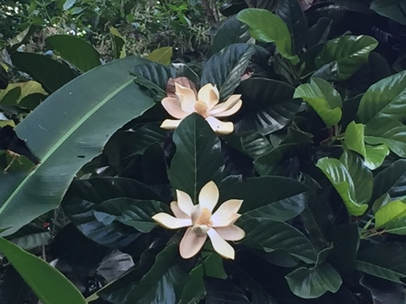
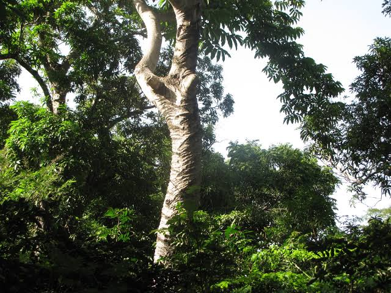
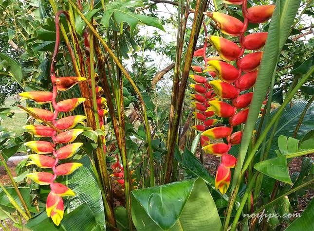
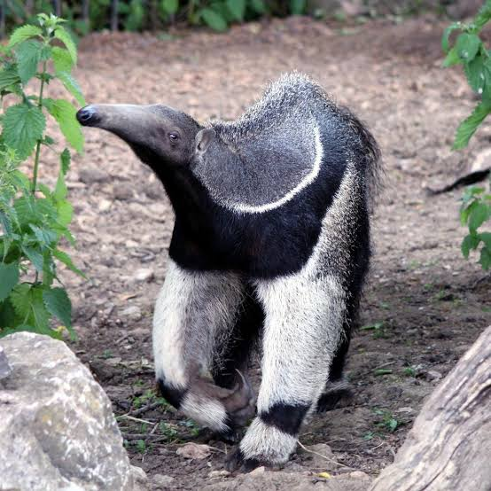
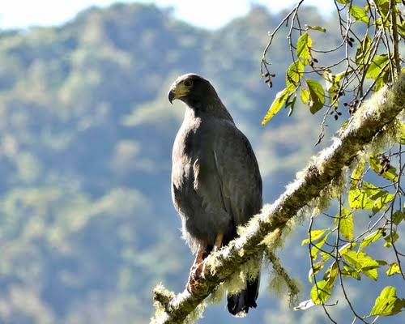

Selva Humeda
Tambien se le conoce como selva perennifolia porque sus arboles y arbustos conservan sus hojas todo el año. En este tipo de vegetacion hay arboles muy altos (de 20 a 30 metros y mas), como la ceiba, la caoba y el hule, con troncos gruesos para soportar el peso de sus grandes copas; asimismo, se encuentran arbustos y plantas en los niveles bajos y medios, los cuales tienen hojas muy grandes para capturar tanta luz como sea posible, asi como bejucos, lianas y plantas trepadoras. En la selva humeda de Mexico crecen 444 especies de orquideas que son endemicas, por ejemplo, la vainilla; asimismo, son originarios de la selva humeda el árbol del cacao, de cuya semilla se produce el chocolate y el arbol del chico zapote, de donde se obtiene el chicle. Cubre 91 565.6 km2 del territorio nacional, lo que representa 4.6% y se encuentra en el sureste del pais, principalmente en el norte de Chiapas (Selva Lacandona).
Selva alta perennifolia o bosque tropical perennifolio. En algunos casos se llega a incluir la selva baja perennifolia como parte de estos ecosistemas. Las selvas se clasifican en altas (de más de 30 metros), medianas (entre 15 y 30 m), o bajas (menos de 15 m) y de acuerdo a la caida de sus hojas se consideran perennifolias (menos del 25% de las especies pierden sus hojas), subperennifolias (25 a 50% de las especies pierden las hojas), subcaducifolias (50 a 75% de las especies pierden las hojas) o caducifolias (más del 75% de las especies pierden sus hojas).
Es un arbol de la familia Magnoliaceae. En la época precolombina, yolloxochitl era uno de los arboles ornamentales mas apreciados en los jardines de Moctezuma, por su apariencia como por sus cualidades aromaticas y hasta por sus propiedades magicas. El estudio de las magnolias ha conducido a la descripcion de nuevas especies, pasando de 11 en 1994 a más de 40 en la actualidad. La mayoria son endemicas y con serias amenazas a su permanencia y limitaciones en informacion sobre su distribucion, biologia y ecologia.Es un arbol con hojas de 18 a 50 cm de largo, elipticas, peciolos largos de 5.2 a 7.8 cm, flores grandes de 18 a 20 cm con mas de 180 estambres. El fruto mide 15 cm y tiene de 38 a 50 carpelos.

Alcanza de 20 a 25 m de alto de tronco recto, de 60 cm de diametro, con ramas separadas entre sí, horizontales y con ligera forma de S; copa abierta y piramidal. Tiene hojas alternas, simples, de 20 por 10 a 45 por 20 cm, oblongas, con peciolos de 4 a 25 mm de largo. Pierden sus hojas entre enero y mayo, excepto en zonas muy humedas. Flores masculinas en receptaculos concavos en las axilas de las hojas caidas, de 1,5 cm de diametro, sobre pedicelos bracteolados de 1 cm de largo, pubescentes; cada receptaculo rodeado por numerosas bracteolas ovadas, verde amarillentas y densamente pubescentes, con numerosos estambres de 4 a 5 mm de largo, de color crema. Flores femeninas en un receptaculo semiconcavo de 15 mm de ancho, sesiles, rodeadas por numerosas bracteolas ovadas, verde amarillentas, pubescentes

Se les llama platanillo por sus hojas. La mayoría de las especies son ornamentales, aunque el rizoma o tuber de algunas especies es comestible asado o cocinado; tal es el caso de Heliconia bihai, muy utilizada en la confeccion de platos regionales, usando la hoja como envoltorio de tamales o juanes. Pueden exceder los 6 m de altura y formar stands densos de 50 o mas ejes.

La selva es el hogar y refugio de gran cantidad de mamiferos, algunos de ellos de habitos arboricolas como mono araña (Ateles geoffrogyi)
y mono aullador (Alouatta palliata), coatí (Nasua narica), hormiguero (Tamandua mexicana), martucha (Potos flavus), mico dorado (Ciclopes didactylus), mapache (Procyon lotor), y otros terrestres como venado
temazate (Mazama americana) y venado cola blanca (Odocoileus virginianus), armadillo (Dasypus novemcinctus), jabali (Pecari tajacu), musaraña (Cryptotis parva), nutria (Lontra longicaudis), tapir (Tapirus bairdii),
tepescuintle (Agouti paca) y tlacuache dorado (Caluromys derbianus).
Entre las aves mas vistosas destacan el águila solitaria (Harpyhaliaetus solitarius), guacamaya roja (Ara macao), hocofaisan (Crax rubra), pava cojolita (Penelope purpurascens), perico verde (Aratinga holochlora),
tucan real (Ramphastos sulfuratus), tucan de collar (Pteroglossus torquatus) y zopilote rey (Sarcoramphus papa). Tambien la habitan reptiles como tortuga casquito (Kinosternon scorpioides), tortuga jicotea
(Trachemys scripta), iguana (Iguana iguana), boa (Boa constrictor), vibora mano de piedra (Atropoides nummifer), cascabel (Crotalus durissus) y varias especies de ranas, sapos y salamandras. En los limites con otros
ecosistemas vive el cocodrilo de rio (Crocodylus acutus). Ademas de mamiferos, aves y reptiles, en las selvas humedas viven una gran diversidad de anfibios, de insectos, particularmente escarabajos, hormigas,
mariposas, abejas y otros invertebrados.
| OSO HORMIGUERO | AGUILA SOLITARIA |
|  |  |